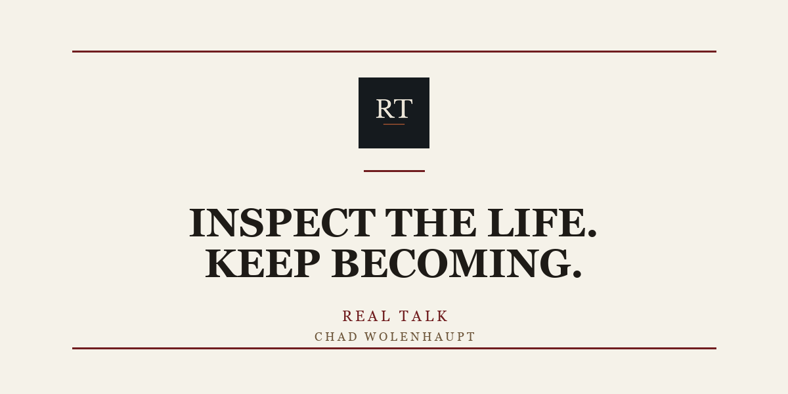

For the man who has done a lot of things right and still feels like he’s managing a life more than living one.
Chad Wolenhaupt is an author, retired founder, and builder calling people toward a more intentional life. After building and selling three businesses, he began speaking to the gap many successful people know but rarely name: the distance between what they have achieved and who they are becoming.
His work challenges people to rebuild the inner life, strengthen the home, recover discipline, and live with legacy in view.
He lives in Franklin, Tennessee with his wife, Michele.

Real Talk
Weekly writing for second-half men who checked the boxes and still feel off. It is not a performance of certainty. It is a place to tell the truth about drift, fatherhood, work, faith, and the life underneath the résumé.
Books
The Presence of a Father is about the weight a man carries in the home. The Language of Grace is about the words that restore what shame keeps breaking.


Contact
No forms, no funnel. If something here landed, write to me.